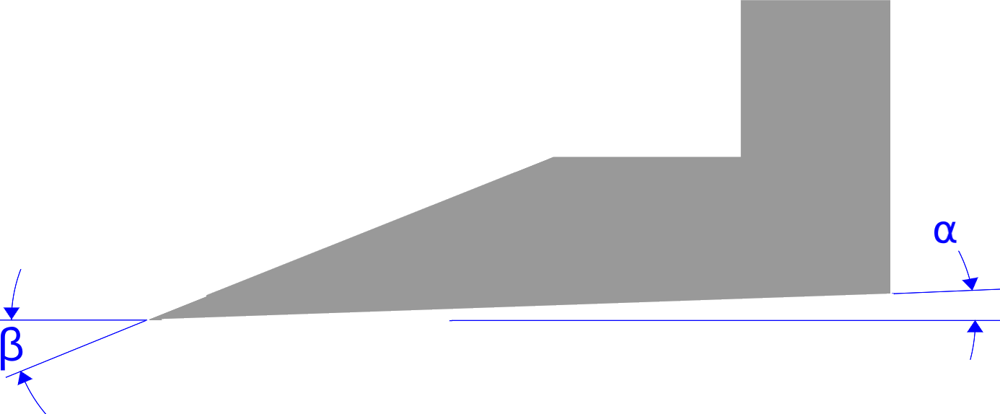
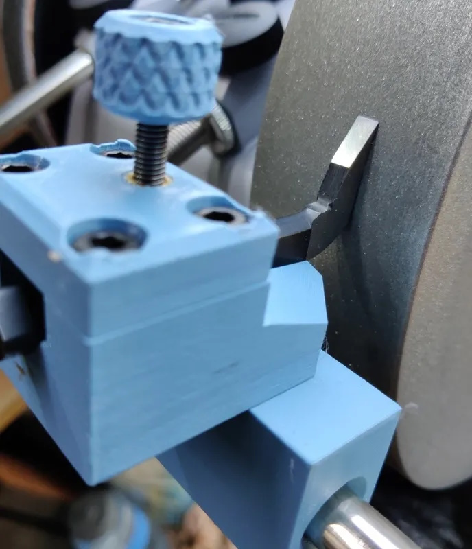
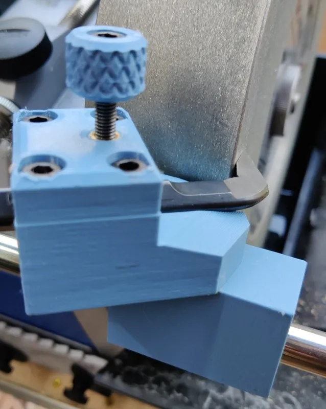
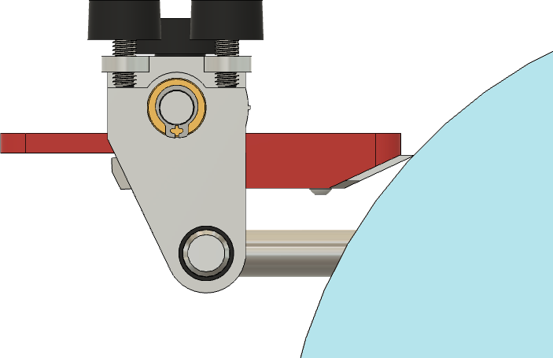
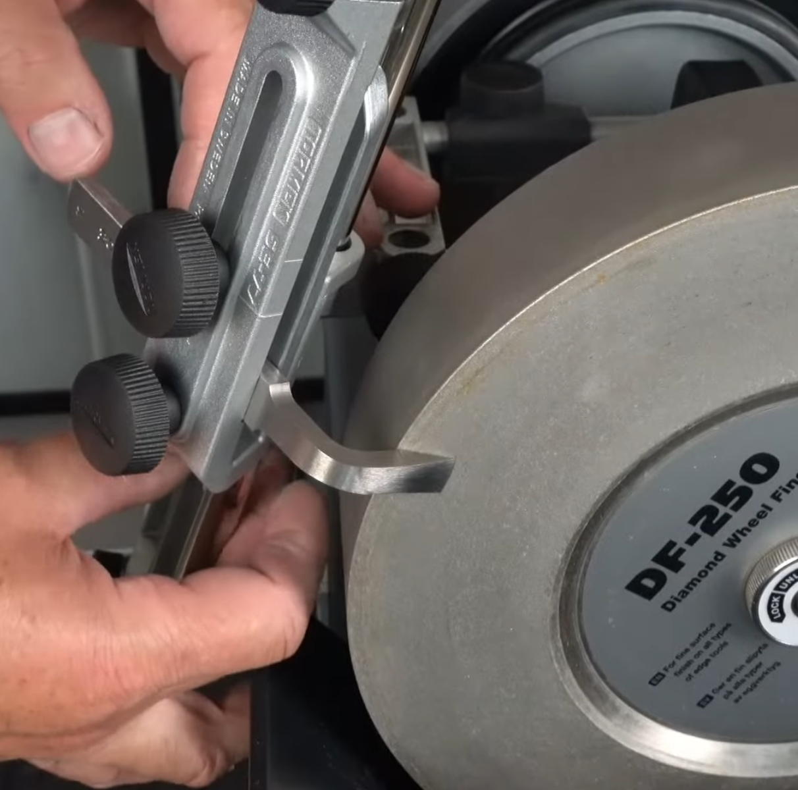

|
Because sharp enough ... usually is not |

|
Router Plane

Edge angles
The image to the right shows nomenclature used in this outline. The vertical part of the blade (which affixes to the tool holder) is shown perpendicular to the surface of the wood.
As with chisels and plane blades, both surfaces which interface to make the cutting edge must be honed. This is the angle β in the picture to the right.

It is critical that α ≥ 0. The toe (cutting edge) must not be higher than the foot (opposite from the cutting edge). If this is not the case, the cutting edge will not engage with the wood properly and will not cut correctly.
|
How are such old tool designs still so relevant in today's world where we have the Internet and CNC systems? It is probably because we are clamoring for a simpler time. Rich Colvin |
When grinding on the side of the grinding stone, the diamond grindstones are recommended.
It is a good practice to note the blade's angle(s) in one of these ways:
This is the preferred method as it also allows for noting other information about the blade such as metal type, where & when purchased (and cost), and any other sharpening notes.

Example icon
Sharpness scales (as shown in the grey icon to the left) are used to indicate the recommended sharpness for the blades noted above. You can click on any of the icons showing the sharpness scale and be redirected to the page describing this more. Lower numbers are duller; higher numbers sharper.
These are general recommendations; you will need to use your own judgment, based on the tool’s intended purpose.
The Tormek SE-76 Square Edge Jig can also be used. These are no longer sold, but if you have one, you should use it.
|
Alan Budden's 3D-printed jigs |
|
|
 Grinding the blade’s bottom face |
 Grinding the blade’s top face on the side of the grinding wheel |
The Tormek SVH-60 Straight Edge Jig may be usable also. You will need to ensure the jig will open up enough to secure your tool’s blade. As with the SE-76, these are no longer sold, but if you have one, you should try to use it.
Alan Budden (Dr.AI on the Tormek Forum & Printables.com) posted links in 2023 to some jigs which can be 3D-printed and used for sharping the traditional blades.
Alan created two versions of these jigs:
Links to the Printables.com web site where Alan published these designs are below.
There is also information about jigs for sharpening this blade on the Traditional Router Plane Blade Jigs page of this handbook.
|
 Straight blade in blade holder sharpening jig, held in SE-77, with a Japanese Waterstone |
The Woodpeckers router plane has blades which are removable from the blade holder shaft. These blades can then be sharpened on the Tormek grinder using a blade holder sharpening jig held in the Tormek SE-77 Square Edge jig or SE-76 Square Edge Jig.
Pictures of this approach are to the left. The blade holder sharpening jig is shown as the red part.
These blade holder sharpening jigs are designed for quick setup of the Tormek using the Tormek TTS-100 Turning Tool Setter. That means the process is fast, and the craftsman can get back to work sooner.
There are two versions of the one for the spear point blade.
There is also information about jigs for sharpening this blade on the Woodpecker Router Plane Blade Jigs page of this handbook.

Image captured from this video, showing the SE-77 and MB-102